Horsemint / Lemon Bee Balm
Scientific name:
Monarda punctata and Monarda citriodora
Abundance:
uncommon
What:
flowers, leaves
How:
tea, flavoring
Where:
fields
When:
summer
Nutritional Value:
minerals, some vitamin A,B2,C
Medicinal Summary:
Leaves/Flowers - antimicrobial; anti-inflammatory; diuretic; expectorant; appetite stimulant; antispasmodic; carminative; anti-parasite (
tisane)
Monarda punctata (Spotted Beebalm) Structural Features:
Leaf Arrangement: Leaves are arranged in an opposite-alternting pattern along the stem.
Leaf Shape: Leaves are lanceolate, measuring about 2 to 3 inches in length and 0.5 to 1 inch in width.
Leaf Venation: Venation is pinnate with a prominent central vein.
Leaf Margin: The leaf margins are serrated.
Leaf Color: Leaves are a medium green, often with a lighter underside.
Flower Structure: Flowers are tubular, clustered in dense, rounded heads with showy, leafy bracts beneath each cluster.
Flower Color Monarda punctata (Spotted Beebalm) : The flowers are pale yellow to pinkish, with purple spots. The bracts are often pink or white.
Flower Color Monarda citriodora (Lemon Beebalm): Flowers are lavender to pink. The bracts can be purple, pink, or white.
Fruit: The fruit is a small, dry capsule.
Seed: Seeds are tiny, contained within the capsules.
Stem: The stem is square in cross-section, typical for the mint family, and can be hairy or smooth.
Hairs: There may be fine hairs on the stems and leaves.
Height: The plant typically reaches a height of 1 to 3 feet.
Horsemint (Monarda punctata).
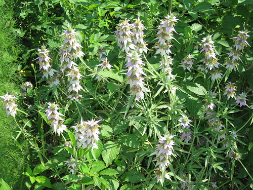
Close-up of Horsemint flowers which are already turning from white to yellowish.
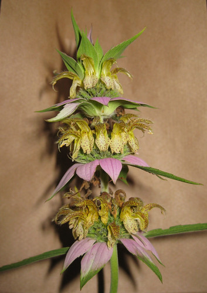
Horsemint stems have hairs running up the leaf petioles.
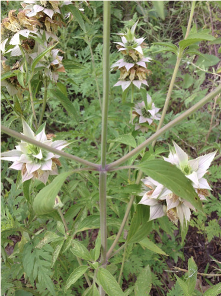
Horsemint going to seed.
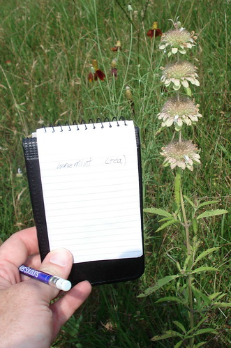
Old, dried Horsemint still smells nice.
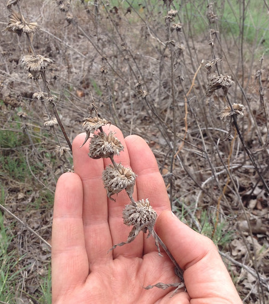
A young Horsemint (Coltmint?) in April in Houston.
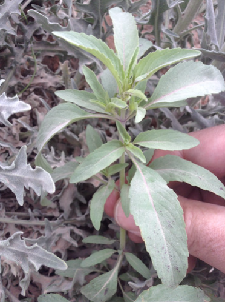
Lemon Bee Balm (Monarda citriodora).
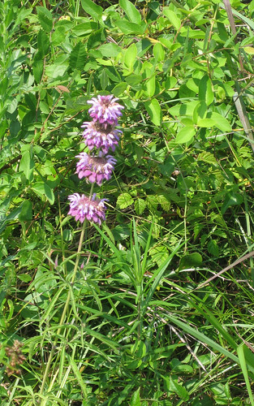
Close-up of Lemon Bee Balm (Monarda citriodora).
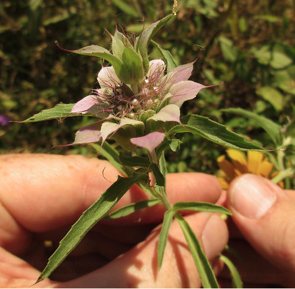
Lemon Bee Balm beginning to drop its petals and go to seed.
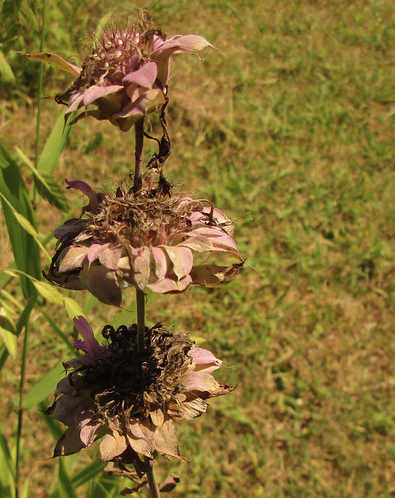
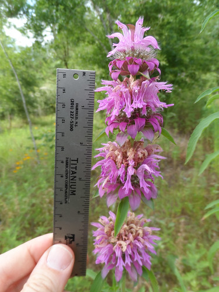
Young bee balm in late winter.
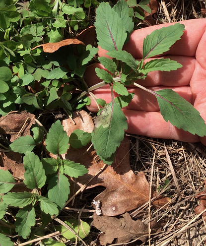
Texas distribution, attributed to U. S. Department of Agriculture. The marked counties are guidelines only. Plants may appear in other counties, especially if used in landscaping.
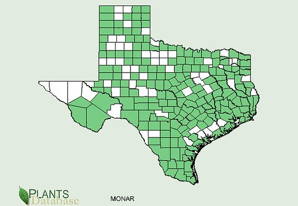
North American distribution, attributed to U. S. Department of Agriculture.
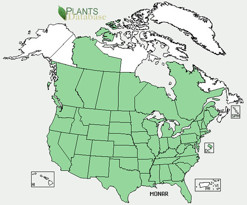
Lining many roadsides and scattered across sunny fields, horsemint's and lemon bee balm's flower spikes are easily recognisable even while passing by at high speeds. The calyx beneath the flowers start out green but then change to bright pink/purple then white. Horsemint flowers start out white with dark spots inside their "throats" but then these flowers turn yellowish while the spots remain unchanged. Lemon bee balm flowers are pink/purple and stay that color until the flower begins drying out.
The flowers and young leaves of these plants add a wonderful herbal/citrus flavor to tea, candies, and anything else that may need some help with its flavor. Lemon bee balm is preferred for flavoring as some people feel horsemint flowers have kind of a horsey smell/taste undertone.
Horsemint leaves are exceptionally high in thymol which is a sedative but also very good for calming upset stomachs. Its antibacterial and anti-worm properties make it a good plant to know when you may be faced with bad water or spoiled foods.
{kind=link}
{kind=link}
{kind=link}
{kind=link}
{kind=link}
{kind=link}
{kind=link}